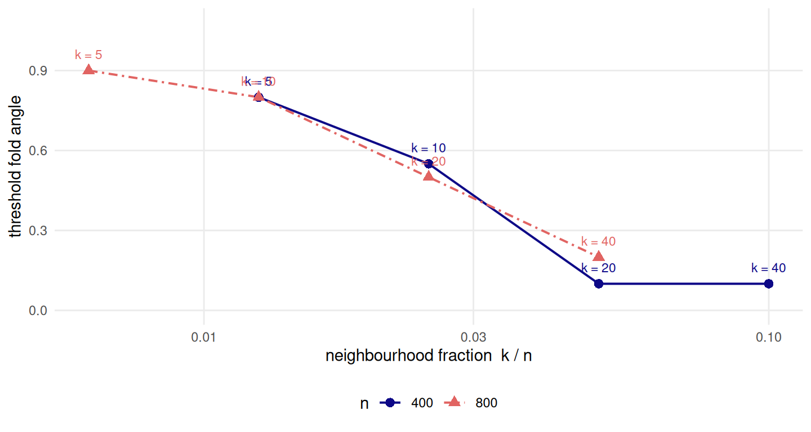

9 Ground truth and the evaluators
Your embedding looks good. Is it correct?
9.1 What “correct” means here
Machado, Behrisch and Telea built projections that score well on trustworthiness and continuity while displaying structure the data does not have (3). That is the false-positive direction, and it needs no ground truth: to show that a bad embedding scores high, it is enough to know that the embedding is bad. This chapter runs the other direction. It hands each evaluator the exact answer as a candidate embedding and asks whether the evaluator recognises it. That cannot be done without an answer key, which is why it is not usually done, and it is the one thing a crease pattern buys that no real dataset can supply.
The complement matters because the two failures have different consequences. A metric that rewards a wrong embedding wastes a reader’s attention. A metric that punishes the right one changes which method gets shipped.
“Correct” is fixed here before anything is measured. An embedding is correct when it is the chart, up to a similarity of the plane. Chapter 2 established that the flat pattern is not an approximation to the folded sheet’s intrinsic structure but that structure itself, so there is an answer and it is exact. Everything in this chapter is a comparison against that answer, and the object under test is not an embedding method. It is the scoring function.
The disagreement about two-dimensional embeddings of single-cell data has largely migrated from the embeddings to the evaluators. That framing is not this book’s: Lause, Berens and Kobak state it as their published position, concluding that the case against those embeddings (1) rested on metrics that “focused on preservation of distances, where 2D PCA was unsurprisingly the best” (2). This book takes no position on what an embedding is for. It measures how far each evaluator sits from the evaluator that has the answer key.
Three things are established below, and one that the plan of record expected is not. The evaluators disagree with the answer key, systematically and in a direction that depends on which reference geometry they are given. Continuity in particular cannot tell a perfect embedding from a plainly wrong one at any fold angle. And the four metrics that a paper reports side by side are not four pieces of evidence. What does not survive is the shape of the law: the inversion threshold is not a property of the fold angle alone, and saying so is the point of having run the experiment rather than described it.
9.2 Setup
audit <- read_run("data/processed/evaluator-audit.rds", "d7982cf7eb3afe7d")
pilot <- read_run("data/processed/evaluator-audit-pilot.rds", "736906d41b87b8b3")
grid <- read_run("data/processed/benchmark-grid.rds", "2483a468d82d4d64")
prov <- attr(audit, "provenance")
# knitr rounds an inline numeric to options(digits), which turns 4e-16 into 0
# and 0.0104 into 0.01. These return character, so a small number survives the
# trip into prose intact.
fmt <- function(x, d = 3L) formatC(signif(x, d), format = "fg", digits = d)
sci <- function(x, d = 2L) formatC(x, format = "e", digits = d - 1L)
p <- miura_ori(nx = 6L, ny = 6L)
m <- sample_manifold(p, theta = 0.8, n = N_DEFAULT, seed = BENCH_SEEDS[1])
U <- m$truth
pca2 <- stats::prcomp(m$X, rank. = EMBED_DIM)$x[, seq_len(EMBED_DIM)]audit is the chapter’s evidence: 19200 scored rows over
20 values of \(\theta\), 4 values of \(k\),
2 sample sizes, 20 seeds,
3 reference geometries and
2 candidate embeddings, produced by
scripts/run-evaluator-audit.R in 2.1 hours.
pilot is the narrower design that decided this chapter existed at all, and
grid is the main benchmark, read here for the metrics it already reports.
9.3 Background
9.3.1 The headline metric: normalised Procrustes RMSE
There is exactly one alignment convention in this book, and it lives in
procrustes_align(). It is the full Procrustes fit
(24,34): the similarity group of
translation, rotation, reflection and one isotropic scale, and nothing else.
Each admission is a decision about what “the same chart” means.
Translation and rotation are free because a chart has no origin and no preferred axis. Isotropic scale is free because two of the methods under test have no scale to speak of — a t-SNE embedding’s extent is a function of its perplexity and its iteration count (7) — and scoring them on one would measure a setting rather than a geometry.
Reflection is the one that must be argued. A mirrored unfolding is a correct unfolding. Turn the flat sheet over and the crease pattern is the same pattern, its mountains and valleys exchanged; no method in Part II is given anything from which it could recover a handedness, and none claims to. The implementation detail carries the whole argument: the rotation is taken as \(UV'\) from the singular value decomposition of the cross-product matrix, with no determinant correction. A version that forced \(\det R = 1\) would score an exactly mirrored recovery as a failure.
rot <- function(a) matrix(c(cos(a), sin(a), -sin(a), cos(a)), 2L, 2L)
moved <- 2.7 * U %*% rot(1.1) + matrix(c(4, -9), nrow(U), 2L, byrow = TRUE)
mirror <- moved %*% matrix(c(-1, 0, 0, 1), 2L, 2L)
err_moved <- reconstruction_error(moved, U)
err_mirror <- reconstruction_error(mirror, U)
det_moved <- det(attr(procrustes_align(moved, U), "rotation"))
det_mirror <- det(attr(procrustes_align(mirror, U), "rotation"))
zb <- complex(real = U[, 1L], imaginary = U[, 2L])^2
bend <- cbind(Re(zb), Im(zb))
err_exact <- reconstruction_error(U, U)
err_bend <- reconstruction_error(bend, U)
qnx_bend <- qnx(bend, reference_dist(m, "chart"), K = K_QNX)A rotated, rescaled, translated copy of the chart scores 4.7e-16. Its mirror image scores 4.7e-16 — the same number to the last digit that means anything — and the fitted rotation has determinant -1 against 1 for the unmirrored copy. Both are zero to floating point, which is what “quotients out” has to mean.
What is not quotiented out is everything else, and the boundary is sharp. Anisotropic scale and shear stay in the residual, because those are precisely the distortions the isometry claim is about. So does a conformal bend: the map \(z \mapsto z^2\) is a rotation and an isotropic scale at every point, so it moves no neighbour out of any neighbourhood, while its scale factor varies across the chart. It scores 0.255 here, and \(Q_{NX}\) at \(K\) = 20 against the chart calls the same configuration 0.963.
The score is normalised by the chart’s own root-sum-square radius, which fixes both ends. Zero is exact recovery. One is an embedding that explains none of the chart’s variance, and a random configuration reaches it to \(O(1/n)\). A bounded metric matters because Chapter 10 reports every result as an excess over a floor, and an excess needs both ends nailed down.
![Three scatter panels of the same 800 points. Panel A is the exact chart, a filled rectangle whose colour ramps left to right with four roughly straight level-set paths running top to bottom. Panel B is the same rectangle, rotated, enlarged and flipped, so its colour ramp now runs diagonally from the dark top-right corner to the bright bottom-left one; its subtitle gives a score of four times ten to the minus sixteen. Panel C is the chart bent by a conformal map into a wedge that fans out towards the top, with the level sets splayed apart rather than parallel; it scores about one quarter.](09-ground-truth-evaluation_files/figure-html/eval-fig-alignment-1.png)
Figure 9.1: What the alignment quotients out, and what it does not. All three panels are scored against the same chart. Point colour is the first chart coordinate and the grey paths are its level sets, drawn so the structure survives greyscale printing.
Figure 9.1 is the convention in one row. Panel B is the same chart and scores as such. Panel C is not, and the rank metrics will disagree.
9.3.2 The four metrics under audit
Four scores are computed for every cell of the book’s grid, and each is defined here against a reference geometry \(D\) and a neighbourhood size \(k\). Write \(r_{ij}\) for the rank of point \(j\) in point \(i\)’s ordering under \(D\), and \(\hat r_{ij}\) for the same rank in the embedding.
Trustworthiness and continuity (35,36) charge the embedding for the neighbours it invents and the neighbours it loses:
\[M_1(k) = 1 - A(k)\sum_{i}\sum_{j \in U_k(i)}\big(r_{ij} - k\big), \qquad M_2(k) = 1 - A(k)\sum_{i}\sum_{j \in V_k(i)}\big(\hat r_{ij} - k\big),\]
with \(U_k(i)\) the points in the display’s \(k\)-neighbourhood but not the reference’s, \(V_k(i)\) the reverse, and \(A(k) = 2 / \big(Nk(2N - 3k - 1)\big)\) the scaling transcribed from Kaski et al. Two things about \(A(k)\) travel with it and most re-implementations drop them. It is the reciprocal of the largest penalty sum any embedding can produce, which is why \(M_1 = 0\) is a floor rather than merely a small number — and the authors are explicit that it is a scaling, not a proven bound on what a real projection can attain, so a value slightly below zero is not necessarily a bug and nothing here clamps one. Read as an information-retrieval pair they are precision and recall of the neighbourhood (37).
\(Q_{NX}(K)\) is read off the co-ranking matrix of Lee and Verleysen
(32), \(Q[k, l]\) counting the ordered pairs at rank \(k\) in the
reference and \(l\) in the embedding. Its top-left block is the fraction of
\(K\)-neighbourhoods preserved,
\(Q_{NX}(K) = \frac{1}{Kn}\sum_{k \le K}\sum_{l \le K} Q[k, l]\), which is
\(K/(n-1)\) for a random embedding rather than zero; rnx() applies that
correction and auc_qnx() integrates it over \(K\) on a log scale.
kNN preservation is the mean agreement of the two \(k\)-nearest-neighbour
sets. One identity is worth stating rather than leaving to be rediscovered:
its overlap form is exactly \(Q_{NX}(k)\). knn_preservation() therefore
defaults to the Jaccard form, so that the book’s four metrics are four and not
three.
Kruskal stress (23) is the fifth member of the usual set and is absent here on purpose. Chapter 2 proves as a one-line proposition that ambient-referenced stress must rank the exact unfolding below a two-component PCA of the folded cloud, for every \(\theta > 0\); a simulation of a theorem is not evidence. What is not entailed, and what this chapter measures, is what the rank metrics do, because they are invariant to a monotone contraction of distances until neighbour identity changes.
9.3.3 Three reference geometries
Every one of the four takes a distance matrix and does not care where it came from. That is the lever.
- ambient — Euclidean distance in \(\mathbb{R}^3\) between the points as observed. This is what PCA, MDS, t-SNE and UMAP actually consume, and what essentially every published evaluation uses (4).
- chart — Euclidean distance in the exact two-dimensional truth. On this construction that is the geodesic distance on the folded surface, exactly and not as an estimate.
- graph — the estimate a method has to work with: a symmetric \(k\)-nearest- neighbour graph on the ambient points with all-pairs shortest paths, which is Isomap’s internal geometry (6).
Nothing in R/metrics.R prefers one, and the argument is named reference
rather than data to keep that visible at the call site.
The book’s own grid uses two of them at once, and the fact is worth stating plainly because it is invisible in the output.
D_amb <- reference_dist(m, "ambient")
D_cha <- reference_dist(m, "chart")
conventions <- data.frame(
candidate = c("the exact chart", "two-component PCA"),
rmse = c(reconstruction_error(U, U), reconstruction_error(pca2, U)),
qnx_chart = c(qnx(U, D_cha, K_QNX), qnx(pca2, D_cha, K_QNX)),
knn_ambient = c(knn_preservation(D_amb, U, K_DEFAULT),
knn_preservation(D_amb, pca2, K_DEFAULT)))grid scores \(Q_{NX}\) at \(K\) = 20 against the
chart, and trustworthiness, continuity and kNN preservation
at \(k\) = 10 against ambient distance. Two
neighbourhood sizes and two reference geometries, in adjacent columns of one
table. Both choices are defensible and R/constants.R records why: the first
three ask whether the embedding preserved the neighbourhoods a method could
see, so ambient is the honest reference; \(Q_{NX}\) is asked against the answer
key, because that is the question a benchmark with an answer key exists to be
able to ask.
The cost of leaving that unsaid is in the table. On the exact chart at \(\theta\) = 0.8, the \(Q_{NX}\) column reads 1 and the kNN column reads 0.789. One says the answer key is perfect. The other says it lost a fifth of its neighbourhoods. Both are correct, and they are not answering the same question.
9.4 The known-answer test
The design is one sentence. Hand each evaluator the exact chart as though it were a submission, alongside a two-component PCA of the folded cloud, and record which one it prefers.
PCA is the sharp choice of wrong answer rather than a straw man. It is the wrong chart — it flattens the corrugation instead of unfolding it — and it is simultaneously the least-squares-optimal linear reproduction of the ambient configuration it was given (17). An evaluator that scores reproduction of ambient distance is being handed the best available competitor at exactly the thing it measures.
![Three scatter panels of 800 points each. Panel A is the exact chart: an evenly filled rectangle with a smooth left-to-right colour ramp and four level-set paths running nearly straight down it. Panel B is the two-component PCA at the chapter's working fold angle: the same rectangle, its points gathered into faint vertical bands and its level sets kinked. Panel C is the same PCA at the last fold angle of the sweep: the points are now gathered into pronounced stripes with visible gaps between them, and the level sets are strongly zigzagged. The three subtitles give scores of about zero, one tenth and one fifth.](09-ground-truth-evaluation_files/figure-html/eval-fig-candidates-1.png)
Figure 9.2: The candidates, Procrustes-aligned to the same answer key and scored against it. Point colour is the first chart coordinate and the grey paths are its level sets, which the exact chart draws as straight nested lines and a wrong chart does not. The wrongness is a function of the fold angle, which is why the audit sweeps it rather than fixing it.
Figure 9.2 is the comparison the audit runs at every cell. The exact chart scores 1.7e-16. PCA scores 0.108 at the fold angle used throughout this chapter and 0.21 at the last angle of the sweep, and the level sets it draws are kinked where the creases ran. An inversion is an evaluator ranking panel A below panel B or C.
Panel B is worth pausing on, because it is the reason this is a hard test rather than an easy one. At a moderate fold a Miura is still close to planar, so its principal-component projection is not a grotesque failure — it is a mildly wrong answer that looks reasonable. An evaluator that cannot separate panel A from panel B is failing at a discrimination that matters, not at a trick.
![Four line panels, one per metric, sharing a vertical axis from zero to one labelled share of seeds inverted, against the folding parameter theta from zero to one. In the trustworthiness, kNN preservation and Q_NX panels almost every curve lies flat along zero, apart from a small bump near theta of 0.05 and, for the largest neighbourhood size, a low ragged band around one fifth that jumps to near one at the far right. The continuity panel is different: four sigmoid curves rise from zero to one, the largest neighbourhood size rising first at about theta 0.2 and the smallest last at about theta 0.9.](09-ground-truth-evaluation_files/figure-html/eval-fig-inversion-1.png)
Figure 9.3: Inversion rate against the folding parameter: the share of seeds in which the evaluator ranks the exact chart below a two-component PCA of the same cloud. Ambient reference, n = 800. Neighbourhood size is encoded by colour and line style together. The panels do not pool over sample size, because the two sample sizes are two different phenomena.
Figure 9.3 is the result at the larger sample size, and it is four different pictures rather than one. Continuity inverts on a clean sigmoid whose location slides left as \(k\) grows. Trustworthiness, kNN preservation and \(Q_{NX}\) mostly do not invert at all: they rank the exact chart first almost everywhere, with a bump near \(\theta\) = 0.05 where the two candidates are barely distinguishable, and a low ragged band at the largest \(k\) that only becomes a majority in the last cell of the sweep.
inv <- audit$inversions
flat_inversions <- sum(inv$inverted[inv$theta == 0])
chart_inversions <- sum(inv$inverted[inv$reference == "chart"])
chart_rows <- sum(inv$reference == "chart")
sc <- audit$scores
chart_truth <- sc[sc$reference == "chart" & sc$candidate == "truth", ]
truth_exact <- all(chart_truth$trust == 1 & chart_truth$cont == 1 &
chart_truth$knn == 1 & chart_truth$qnx == 1)Two controls make this a mechanism rather than a rate, and both come out clean.
At \(\theta\) = 0 the inversion count over the whole artefact is 0. A flat sheet contracts nothing, ambient distance is chart distance, and there is nothing to invert — which is the prediction Chapter 2’s contraction result makes, evaluated at the one point where the contraction vanishes.
Against the chart reference the count is 0 in
12800 rows. Not rare: never. And the reason is arithmetic rather than
luck — handed the chart as its reference, every metric scores the chart as a
candidate at exactly one, which is checked here rather than asserted
(truth_exact is TRUE). No candidate can beat a perfect score, so
no inversion is available.
The inversion is therefore not a property of the metric. It is a property of the pair (metric, reference geometry), and the reference is doing most of the work.
An inversion is also not a bug. It is the evaluator answering the question it was actually asked. An ambient-referenced metric measures reproduction of ambient distance; folding contracts ambient distance strictly; so the exact unfolding reproduces ambient distance badly by construction, and something that was fitted to reproduce it does better. That much is Chapter 2’s stress proposition and needed no experiment.
What did need one is that a rank metric inverts at all. Rank metrics are invariant to any monotone transformation of distances, and the argument that they should therefore be safe here is the argument this chapter was budgeted to test. It fails on a detail: folding is not a monotone map on ambient distance. The contraction factor is \(\sin(\rho/2)\) per crease crossed, so a pair straddling a fold contracts while a pair of the same chart distance inside one facet does not, and their order swaps. Neighbour identity therefore changes, and the amount it changes is measurable.
rk <- function(D) { diag(D) <- -Inf
t(apply(D, 1L, rank, ties.method = "first")) - 1L }
agree <- function(r1, r2, K) mean(rowSums(r1 >= 1L & r1 <= K & r2 >= 1L & r2 <= K)) / K
m_flat <- sample_manifold(p, theta = 0, n = N_DEFAULT, seed = BENCH_SEEDS[1])
ra_flat <- rk(reference_dist(m_flat, "ambient"))
rc_flat <- rk(reference_dist(m_flat, "chart"))
ra <- rk(D_amb); rc <- rk(D_cha)
moved_flat <- 1 - agree(ra_flat, rc_flat, K_DEFAULT)
moved_fold <- 1 - agree(ra, rc, K_DEFAULT)At \(\theta\) = 0 a point’s ambient neighbours and its chart neighbours are the same set: the share that differ is 0. At \(\theta\) = 0.8 it is 0.13. That number is the whole mechanism. An eighth of every neighbourhood has been rewritten by the fold, the exact chart is scored on reproducing the rewritten version, and it does not reproduce it — because it is right.
9.4.1 Why the obvious fix fails
The obvious repair is to keep the metric and replace the reference: score against estimated geodesics instead of ambient distance, which is what a practitioner who has read Isomap would reach for. It does nothing, and it cannot.
D_gra <- reference_dist(m, "graph", k = max(prov$k))
rg <- rk(D_gra)
Ks <- prov$k
agree_graph <- vapply(Ks, function(K) agree(ra, rg, K), numeric(1))
agree_chart <- vapply(Ks, function(K) agree(ra, rc, K), numeric(1))
graph_above <- all(D_gra >= D_amb - TOL$default)
key <- c("k", "theta", "n", "seed", "candidate")
paired <- merge(sc[sc$reference == "ambient", ], sc[sc$reference == "graph", ],
by = key, suffixes = c(".a", ".g"))
gap_graph <- vapply(names(METRIC_LABEL), function(v)
max(abs(paired[[paste0(v, ".a")]] - paired[[paste0(v, ".g")]])), numeric(1))The graph reference agrees with the ambient reference on 1, 1, 1, 1 of the neighbour sets at \(k\) of 5, 10, 20, 40 — that is, on all of them. The chart reference, over the same points, agrees on only 0.908, 0.873, 0.865, 0.879.
The identity is exact and has a one-line proof. Any path through a Euclidean
graph is at least as long as the straight line between its endpoints, so graph
distance is never below ambient distance (graph_above is TRUE);
and the graph contains an edge to each of a point’s \(k\) nearest ambient
neighbours, whose shortest path is therefore that edge. So for every
\(K \le k\) the two geometries have the same \(K\) nearest neighbours in the
same order. A rank metric evaluated at \(K \le k\) cannot see the difference.
The audit says the same thing across all 19200 scored rows: the largest gap between an ambient-referenced and a graph-referenced score is 0 for continuity, kNN preservation and \(Q_{NX}\), and 0.0022 for trustworthiness. Trustworthiness is the only one that moves, and that too follows: it is the one metric that asks for the reference rank of a point the embedding placed nearby, which can lie far outside the graph’s own \(k\).
An estimated geodesic is not a different question from an ambient distance at the scale a rank metric looks at. Only an exact chart is, and only a benchmark with an answer key has one. This is a stronger statement than “graph distances are fragile” — the short-circuit failures of Chapter 5 (9) are about the long-range structure, and the point here is that even a perfectly connected graph changes nothing locally.
9.5 Results
9.5.1 How optimistic, and in what units
“Optimistic by X” is not a statement the evidence supports, and the reason is visible before any inversion is counted.
![Five line panels sharing a vertical axis from zero to one labelled score, plotted against the folding parameter theta. In the trustworthiness and continuity panels both curves are flat along the top of the axis at one across the entire range and are indistinguishable. In the kNN preservation and Q_NX panels both curves fall away as theta grows, the exact chart staying above the PCA curve and reaching about 0.58 and 0.71 at the right-hand end. In the fifth panel, normalised Procrustes RMSE, the exact chart is flat at zero while the PCA curve rises to about 0.21.](09-ground-truth-evaluation_files/figure-html/eval-fig-scores-1.png)
Figure 9.4: The two candidates scored against ambient distance across the whole fold sweep, at the book’s default neighbourhood size and n = 800. All five quantities lie on the unit interval and share one axis, so the comparison is not an artefact of scaling. Candidate is encoded by colour and line style together.
Figure 9.4 puts all five quantities on one axis, which they share because the normalised Procrustes score also lives on the unit interval. Trustworthiness and continuity are two flat lines at the top of the panel. They do not separate a configuration whose error is zero from one whose error reaches a fifth of the chart’s radius, at any fold angle in the sweep.
amb <- inv[inv$reference == "ambient", ]
amb$margin <- amb$pca2 - amb$truth # positive when the evaluator prefers PCA
big <- max(prov$n)
optimism <- do.call(rbind, lapply(names(METRIC_LABEL), function(mt) {
d <- amb[amb$metric == mt & amb$n == big, ]
data.frame(metric = METRIC_LABEL[[mt]],
inverted = mean(d$inverted),
widest_pca = max(d$margin),
widest_truth = -min(d$margin),
pca_reportable = mean(d$margin > MIN_REPORTABLE),
truth_reportable = mean(-d$margin > MIN_REPORTABLE))
}))
cont_cells <- amb[amb$metric == "cont" & amb$n == big, ]
cont_reportable <- sum(cont_cells$margin > MIN_REPORTABLE)
one_cell <- function(ref, cand) {
d <- sc[sc$reference == ref & sc$candidate == cand &
sc$k == K_DEFAULT & sc$n == big, ]
aggregate(cbind(trust, cont, knn, qnx) ~ theta, data = d, FUN = mean)
}
ceiling <- one_cell("ambient", "truth") # what a perfect answer scores
chart_pca <- one_cell("chart", "pca2") # what a wrong answer scores
knitr::kable(
optimism, digits = 3, row.names = FALSE,
col.names = c("metric", "inverted", "widest PCA lead", "widest truth lead",
"PCA wins reportably", "truth wins reportably"),
caption = "Four metrics, four answers. Ambient reference, at the larger sample size, over every fold angle, neighbourhood size and seed in the audit. 'Reportably' means by more than the book's pre-registered reportable difference.")| metric | inverted | widest PCA lead | widest truth lead | PCA wins reportably | truth wins reportably |
|---|---|---|---|---|---|
| trustworthiness | 0.013 | 0.000 | 0.009 | 0.000 | 0.000 |
| continuity | 0.418 | 0.010 | 0.000 | 0.000 | 0.000 |
| kNN preservation | 0.054 | 0.029 | 0.197 | 0.003 | 0.459 |
| Q_NX | 0.056 | 0.023 | 0.157 | 0.001 | 0.329 |
Table 9.1 is the honest summary and it does not reduce to a number.
Continuity inverts on 41.8 per cent of cells, and its widest lead over the truth anywhere at this sample size is 0.0104. It clears the book’s pre-registered reportable difference of 0.02 in 0 of 1600 cells. So the claim the numbers support is not “continuity prefers a wrong embedding by X”. It is that continuity cannot distinguish a perfect embedding from a plainly wrong one at all, and reports both as excellent. The weaker version sounds bolder and is not what happened.
Trustworthiness is inert too, and more nearly symmetrically so: it inverts on 1.3 per cent of cells and never moves by more than 0.0087 either way.
kNN preservation and \(Q_{NX}\) do the job asked of them. They rank the exact chart first, by a margin clearing the reportable difference in 45.9 and 32.9 per cent of cells, and their widest lead for the truth is 0.197. Ranking the right answer first is the whole of what is asked, and two of four metrics do it.
They do it while calling the right answer mediocre, which is the second half of
the finding and the one with a practical consequence. The ceiling object holds
the score the answer key itself earns under the standard recipe. At the last
cell of the sweep, ambient-referenced kNN preservation at \(k\) = 10
rates the exact unfolding 0.58 and \(Q_{NX}\) rates it
0.714. Any reader shown
0.58 would call that embedding a partial failure. It
is the answer.
One more reading is available here and it corrects a tempting summary. The result so far invites “use the right reference geometry and the metrics behave”, and that is only half true. Swapping ambient for the exact chart fixes the ordering: with the answer key as reference, nothing inverts anywhere. It does not give trustworthiness and continuity a range to answer in. Scored against the exact chart at the hardest cell of the sweep, the two-component PCA — the configuration whose true error is 0.212 — still earns trustworthiness 0.995 and continuity 0.995. A perfect reference geometry and a wrong embedding, and the metric reports near-perfection. The reference decides who wins; the metric decides whether the win means anything, and for these two it does not.
9.5.2 Four metrics, one number
The four are reported side by side in almost every evaluation, and read as four independent lines of evidence. On the audit they gave four different answers. On the benchmark grid — nine methods, three noise models, the whole \(\theta\) sweep, 9199 scored cells — they largely do not.
![Three scatter panels, each of roughly nine thousand semi-transparent points. The left panel plots Q_NX against kNN preservation and the cloud lies close to a rising curve, annotated Spearman 0.92. The middle panel plots trustworthiness against continuity, a looser rising cloud crammed into the top-right corner above 0.9 on both axes, annotated Spearman 0.70. The right panel plots trustworthiness against normalised Procrustes RMSE: a dense horizontal band pinned near trustworthiness one that stretches across the whole range of the error axis, annotated Spearman minus 0.79.](09-ground-truth-evaluation_files/figure-html/eval-fig-agreement-1.png)
Figure 9.5: Metric agreement across the benchmark grid. Each point is one scored cell. The two rank metrics in the left panel are computed at different neighbourhood sizes against different reference geometries and still move together; the right panel is the gap this chapter is about.
Figure 9.5, left panel: \(Q_{NX}\) and kNN preservation rank the grid’s cells at Spearman 0.921 — across 9199 cells, at different neighbourhood sizes, against different reference geometries. They are near-redundant despite being configured to ask two different questions, because both count neighbour-set overlap and neighbour sets are what varies. Trustworthiness and continuity agree at 0.695. Reporting three of these is not three pieces of evidence; it is one piece of evidence and two restatements, and the practice of tabling them together (4) hides that.
The four fall into two families rather than four instruments, and the split is
the one the definitions predict. \(Q_{NX}\) and kNN preservation count how much of
a neighbour set survived, and their overlap forms are the same number, so
correlation near one is the expected result rather than a discovery.
Trustworthiness and continuity weight each lost or invented neighbour by how
far it moved in ranks, which is a different functional and gives them the
looser agreement above. A reader wanting two independent readings should take
one from each family and a distance-based score alongside — which is what
rank_metrics() returns in one pass and what the book’s grid records per cell.
The right panel is what a chapter on evaluators is for. 74.1 per cent of the grid’s scored cells have trustworthiness above 0.99, and 46.6 per cent of those have a normalised Procrustes error above 0.2 — an embedding that has lost a fifth of the chart. The grid’s median cell scores 0.227 on Procrustes and 0.996 on trustworthiness. A metric whose median is that close to its ceiling is not measuring the range it is being asked about.
9.6 Diagnostics
9.6.1 Does k change the answer?
It does, and this is where the chapter’s plan of record has to be corrected against its own artefact.
The contribution was specified as a threshold law in \(\theta\): rank metrics are invariant to monotone contraction until neighbour identity changes, so they should invert only above a fold angle of about 0.8 while stress inverts everywhere. The first half is right and is why the rank metrics behave at all differently from stress. The threshold is not.

Figure 9.6: Where continuity’s inversion sets in. The threshold is the smallest fold angle from which the evaluator inverts on at least half of seeds and never recovers. Plotted against the neighbourhood fraction k/n, the two sample sizes fall on one curve; plotted against k alone they would not. Sample size is encoded by colour, shape and line style together.
Figure 9.6 locates it. At the smallest neighbourhood the threshold is 0.9, which is roughly where the plan expected it. At the largest it is 0.2 — near the flat sheet, fourteen grid steps earlier. A single threshold in \(\theta\) does not exist, because \(k\) moves it across most of the available range.
What the two sample sizes do is settle what \(k\) is a proxy for. Plotted against the neighbourhood fraction \(k/n\) the two curves nearly coincide: at \(k/n\) = 0.0125 the threshold is 0.8 at the smaller sample and 0.8 at the larger — the same value, at half the neighbourhood size and twice the points. The mechanism follows: a \(k\)-neighbourhood covers a chart radius that scales as \(\sqrt{k/n}\), and continuity inverts once that radius is large enough that a typical neighbourhood spans a crease. Fold angle and neighbourhood fraction are two ways of buying the same thing.
So the law the chapter can state is a threshold surface in \((\theta, k/n)\) for continuity, and for continuity alone: at the larger sample size no other metric has a \(\theta_{1/2}\) at any \(k\) in the design. The coincidence with Chapter 5’s analytic short-circuit onset that the plan anticipated is not established here — this artefact does not measure the short circuit, and the two would have to be run against each other before either could be said to predict the other.
9.6.2 What to report when you have no answer key
Three recommendations follow, and they cost nothing.
Report the reference geometry and the neighbourhood size with the score. “Trustworthiness 0.99” is not a result. The audit’s whole content is that the same metric on the same embedding answers differently depending on which distance matrix it was handed, and by more than the difference between a perfect embedding and a bad one.
Report the score against its floor. metric_floor() returns the smallest
normalised Procrustes error any \(d\)-dimensional configuration of these points
could achieve — the tail of the chart’s own spectrum, by Eckart–Young
(18).
floor_2d <- metric_floor(m, 2L)
floor_1d <- metric_floor(m, 1L)
prod4 <- product_manifold(m, sample_manifold(p, theta = 0.5, n = N_DEFAULT,
seed = BENCH_SEEDS[2]))
floor_prod <- metric_floor(prod4, EMBED_DIM)
grid_floor <- unique(grid$floor[!is.na(grid$floor)])On this sample it returns 0, and the grid’s own floor column is
0 in every cell it holds. That is worth one sentence rather than a
column: a two-dimensional chart embedded in two dimensions has nothing
unreachable in it, so every error reported in Chapter 10 is loss the
method is responsible for. Force the same chart into one dimension and the floor
is 0.652; take Chapter 8’s product of two
folded sheets, an intrinsically four-dimensional object, and it is
0.649. A method scoring 0.649 has thrown
away everything on the main grid and hit the bound exactly on the product.
Reporting the number without its floor distinguishes neither.
Report the answer key’s own score. The floor bounds the Procrustes metric
and nothing else — there is no analogous bound for \(Q_{NX}\) or trustworthiness,
and this chapter does not supply one. What it does supply is the empirical
substitute that only a known-answer benchmark can produce: the ceiling object
above is the score a perfect embedding attains under each convention. Where
that number is 0.58, an embedding scoring
0.58 has not half failed. It has succeeded, and the
shortfall belongs to the metric.
DU <- as.matrix(stats::dist(U))
set.seed(11L)
J <- matrix(stats::rnorm(2L * nrow(U)), ncol = 2L)
distortion <- list(
`conformal bend` = function(t) {
z <- complex(real = U[, 1L], imaginary = U[, 2L])^(1 + t)
cbind(Re(z), Im(z))
},
shear = function(t) cbind(U[, 1L] + t * U[, 2L], U[, 2L]),
jitter = function(t) U + t * J)
match_error <- function(f, target, hi = 6) { # bisect on the strength
lo <- 1e-6
for (i in seq_len(50L)) {
mid <- (lo + hi) / 2
if (reconstruction_error(f(mid), U) < target) lo <- mid else hi <- mid
}
f((lo + hi) / 2)
}
battery <- do.call(rbind, lapply(names(distortion), function(nm) {
Y <- match_error(distortion[[nm]], 0.39)
data.frame(distortion = nm,
rmse = reconstruction_error(Y, U),
trust = trustworthiness(DU, Y, K_DEFAULT),
cont = continuity(DU, Y, K_DEFAULT),
knn = knn_preservation(DU, Y, K_DEFAULT),
qnx = qnx(Y, DU, K_QNX))
}))
knitr::kable(
battery, digits = 3, row.names = FALSE,
col.names = c("distortion", "Procrustes RMSE", "trustworthiness",
"continuity", "kNN preservation", "Q_NX"),
caption = "Three distortions of one chart, each tuned by bisection to the same normalised Procrustes error. The rank metrics do not agree about them, and the disagreement is not small.")| distortion | Procrustes RMSE | trustworthiness | continuity | kNN preservation | Q_NX |
|---|---|---|---|---|---|
| conformal bend | 0.39 | 1.000 | 1.000 | 0.927 | 0.943 |
| shear | 0.39 | 0.998 | 0.998 | 0.589 | 0.739 |
| jitter | 0.39 | 0.889 | 0.887 | 0.059 | 0.178 |
And a fourth, which is really a warning about the first three. Optimism is a band, not a number. Table 9.2 applies three distortions to the same chart and tunes each to an identical true error of 0.39. Trustworthiness rates them 1, 0.998, 0.889. kNN preservation rates the same three configurations 0.927, 0.589, 0.0593 — a spread of 0.87 at fixed true error. There is no correction factor to apply, because there is no factor: what the rank metrics see is the kind of distortion, and the Procrustes error does not determine it.
9.7 Where it fails
One family, one wrong candidate. Every number above is a Miura at one tessellation size against one competitor. PCA is the right competitor for an ambient-referenced metric and a poor one for anything else, and an evaluator that survives this test has survived one test. The audit’s inversion is a property of the pair, and a different wrong embedding — a short-circuited Isomap, say — would produce a different table.
Two sample sizes are not a sample-size law. The \(k/n\) collapse in Figure 9.6 rests on two values of \(n\) that differ by a factor of two, and on a threshold statistic estimated from 20 seeds per cell on a grid of 20 fold angles. It is consistent with \(\sqrt{k/n}\) and it does not exclude much else. A third sample size is the cheapest experiment this chapter suggests and it has not been run.
The pilot’s own headline pooled over \(n\), and should not have. The narrow run that decided this chapter existed reported one table in \(k\) and \(\theta\), averaged over both of its 2 sample sizes. On the full sweep kNN preservation inverts on 30.4 per cent of cells at the smaller sample size and 5.44 per cent at the larger; the pooled figure is 17.9 per cent, which describes neither. That is recorded here rather than quietly fixed, because it is the same error this chapter warns about in other people’s tables.
Nothing here is a claim about methods. The known-answer test scores evaluators. Which method to use, and whether this benchmark can tell them apart at all, is Chapter 10’s question and is settled by a pre-registered rule rather than by these curves.
What this chapter does not settle. Whether an evaluator that mishandles a crease also mishandles a real dataset is not established and cannot be, because the property being exploited — an exact chart — is the property real data lacks. The defensible reading is the disqualification argument: a metric that ranks the right answer below a wrong one where the right answer is known has not earned trust where it is not. That is a necessary condition, it asserts nothing about biology, and it is all this chapter claims.
9.8 Reproduce this
The artefact is data/processed/evaluator-audit.rds, produced by
scripts/run-evaluator-audit.R, which also writes the pilot under --pilot.
It carries its own provenance and this chapter refuses to render against a
different run.
Rscript scripts/run-evaluator-audit.R --pilot # the narrow decision run
Rscript scripts/run-evaluator-audit.R # the full sweepThe metric definitions are in R/metrics.R and every identity used above is a
test in tests/testthat/test-metrics.R: that reflection alone is free, which is
what forbids a determinant-one fit; that \(A(k)\) agrees with a brute-forced worst
case derived without reference to the paper; that the normalised Procrustes
statistic agrees with vegan’s symmetric form; that
knn_preservation(measure = "overlap") is exactly \(Q_{NX}(k)\); that on a flat
sheet the chart is the ambient geometry and on a folded one it is not; and
that metric_floor() is attained by the truncated chart and nothing gets below
it. Run them with Rscript tests/testthat.R.
9.9 Further reading
Lee and Verleysen’s textbook (12) and their co-ranking paper (32) are the reference for everything in the rank-metric section, and Kaski et al. (36) is the primary for trustworthiness and continuity — with Venna and Kaski (35) for priority and the information-retrieval reading (37) for why the pair is a pair. Espadoto et al. (4) survey what is actually reported in practice, which is the target of the agreement result above.
On the adversarial side, Machado et al. (3) is the direct complement to this chapter and should be read alongside it. Schoeneman et al. (10) make the same move in a different direction: they build a benchmark whose answer key is exact because the parameterisation is unit speed, and Chapter 11 measures this book’s construction against theirs.